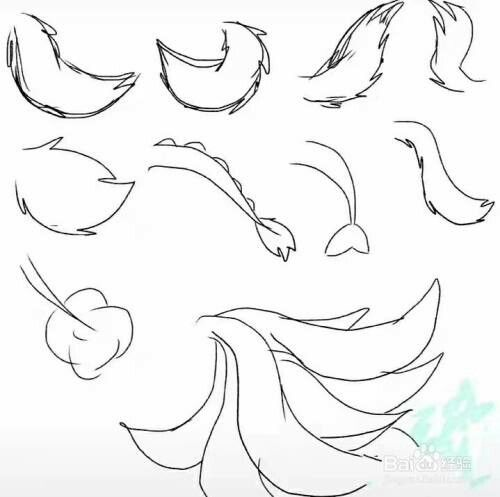

Descrição da Seção
A seção de agora mostrara dicas e referencias de como desenhar caudas.
Exemplos
Desenhe todos os desenhos dos exemplos para treinar.
- 
* Para desenhar caudas de furries, comece esboçando uma forma básica que se ajuste à espécie do personagem, variando entre longas e esguias ou curtas e espessas. Adicione uma linha central para guiar a curvatura e garantir um movimento natural. Ao detalhar, use traços curtos para simular a textura do pelo e crie sombras para dar volume. As extremidades da cauda podem ter variações, como pontas peludas, refletindo a personalidade do personagem. Com prática, você poderá criar caudas únicas e expressivas.